Ambition招新|期待与你并肩作战
Ambition
你好呀！新朋友们
我是深藏在Ambition战队的一名小小同志
接到上面的通知
为战队寻找新的苦力工
哦不！是新鲜血液
怀揣年少的机甲梦
与队友 与灵魂 与青春
一起在路上
有爱可寻 有梦可追
关于Ambition
Ambition战队始建于2017年
是电子技术与应用协会为助力Robomaster机甲大师赛而组建的一只主攻机器人的团队。
从寥寥十数人到如今三十几人且拥有完整体系的团队，这背后是队员不懈的执着努力，是对梦想始终如一的热爱与尊重 。
都要在路上
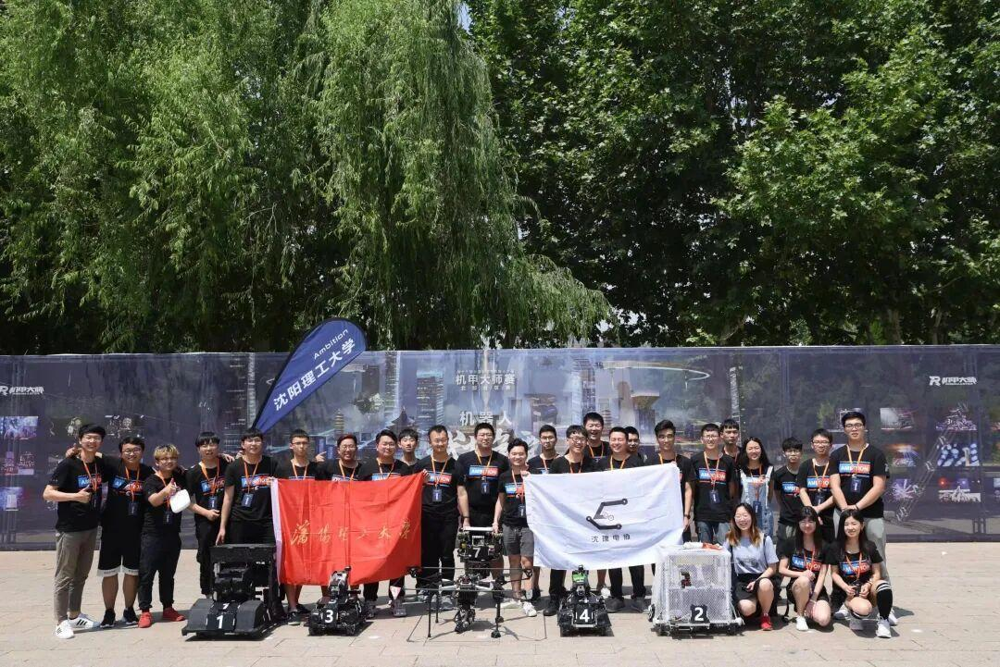
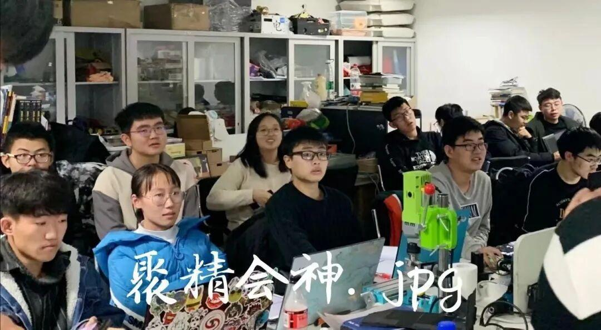
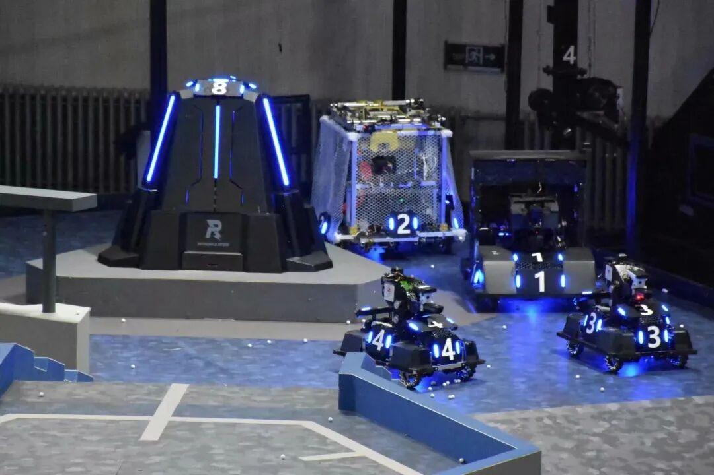
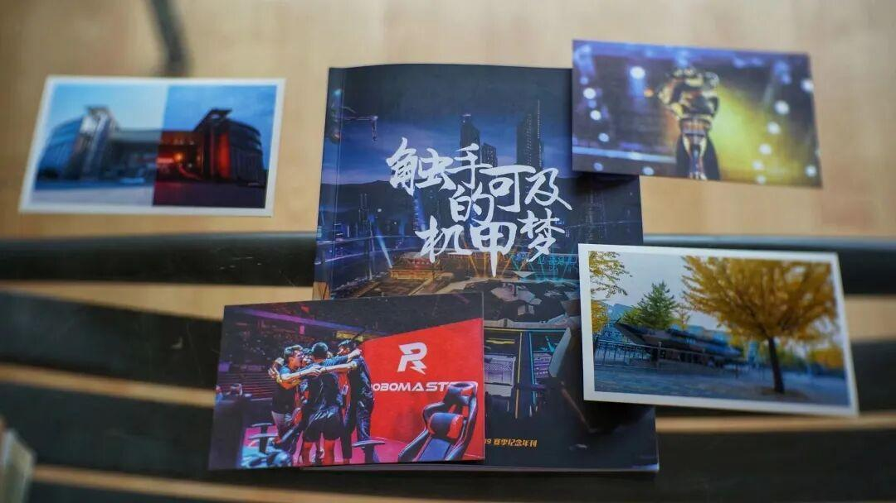
Ambition战队2020赛季荣获全国大学生机器人大赛Robomaster对抗赛（线上）三等奖，其中运营组荣获国家级二等奖。
自Ambition成立以来，队员们也多次代表本校参加辽宁省机器人大赛，辽宁省电子设计大赛等科技类竞赛并取得了优异的成绩。
2021赛季来袭，与三百余所高校竞争，亲手制作机甲机器人，感受实体竞技，五种机器人同你并肩作战...
Ambition战队现面向大一大二学生招新
专业指导教师 两所实验室 独有的机械设施
来吧老兄 同你并肩作战 圆我们的年少机甲梦
<< 滑动查看下一张图片 >>
Robomaster介绍
RoboMaster机甲大师赛是由共青团中央、深圳市人民政府联合主办，DJI大疆创新发起并承办的。作为国内首个激战类机器人竞技比赛，其凭借其颠覆传统的比赛方式、震撼人心的视听冲击力、激烈硬朗的竞技风格，吸引到全国数百所高等院校、近千家高新科技企业以及数以万计的科技爱好者的深度关注。
你就来
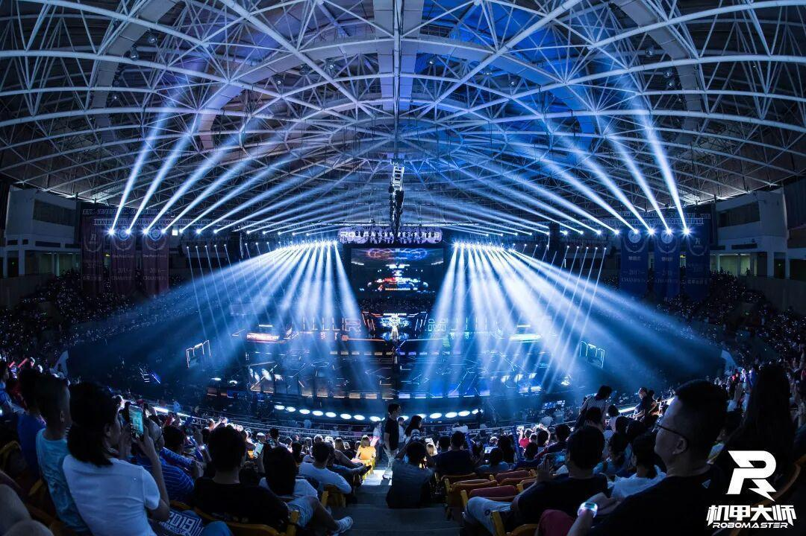
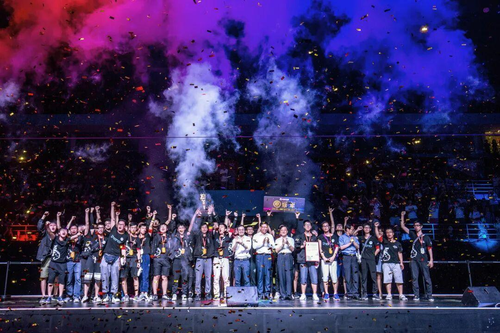
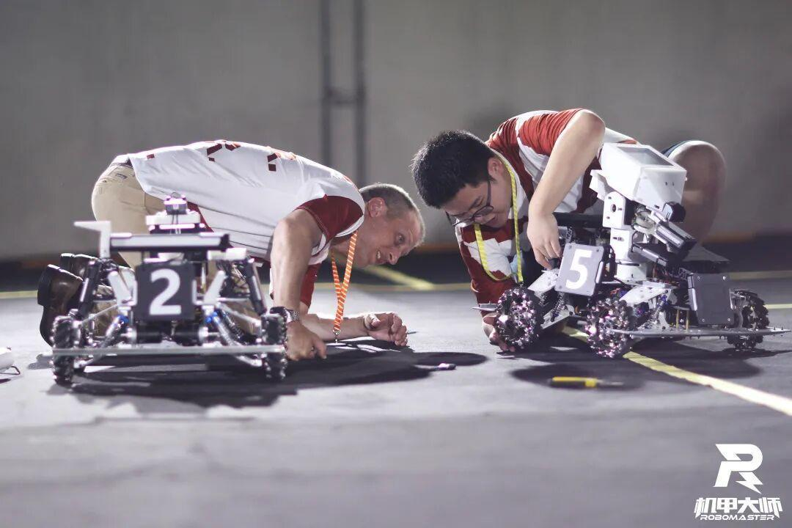
双方战队自主研发机器人，展开激烈对抗。阵容有英雄机器人，步兵机器人，工程机器人，哨兵机器人和步兵机器人。
每台机器人都有血量，血量为0则阵亡。在每局7分钟的时间内，先摧毁敌方基地的战队宣告胜利。
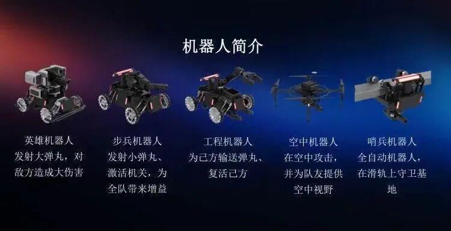
Ambition部门介绍
Ambition战队分为机械组，电控组，视觉组，硬件组，运营组五部分。所有部门相互配合，共同完成RoboMaster比赛。
机械组
1．用电脑制图软件建立三维模型，设计加工装配机器人结构，外观。
2．完成电路的走线。
3．与电控，硬件，视觉进行沟通，明确自己的设计方向。
4．按照电控和视觉后期需求设计改进图纸，进行制造和组装。
电控组
1.与机械组，硬件组，视觉组完成联调。
2.熟练使用各种电子器件，计算机软件。
3.完成整个机器人控制程序的编写以及调试。
拧螺丝焊板子
痛苦并快乐
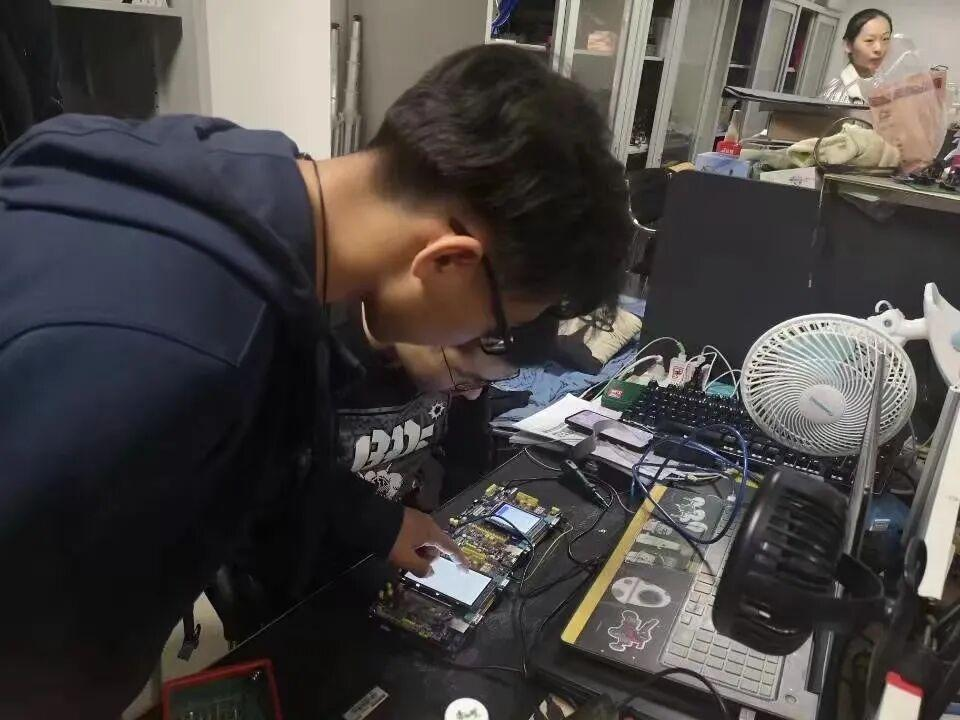
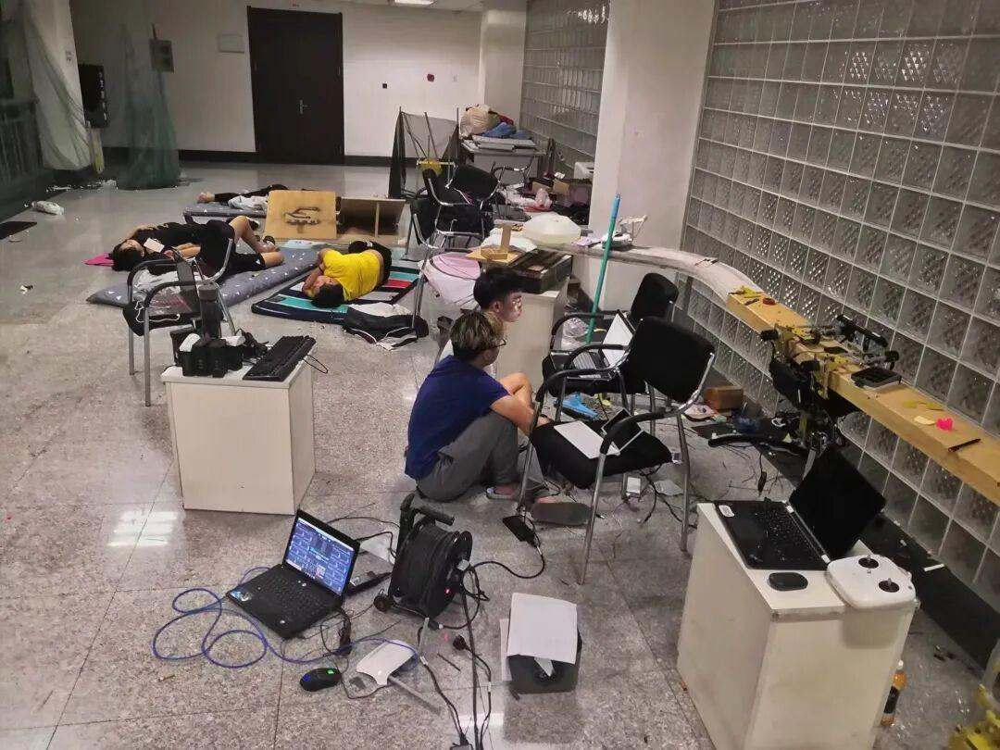
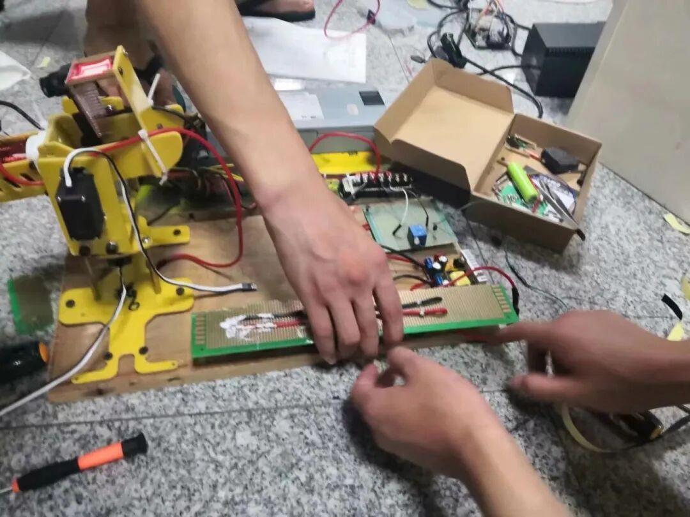
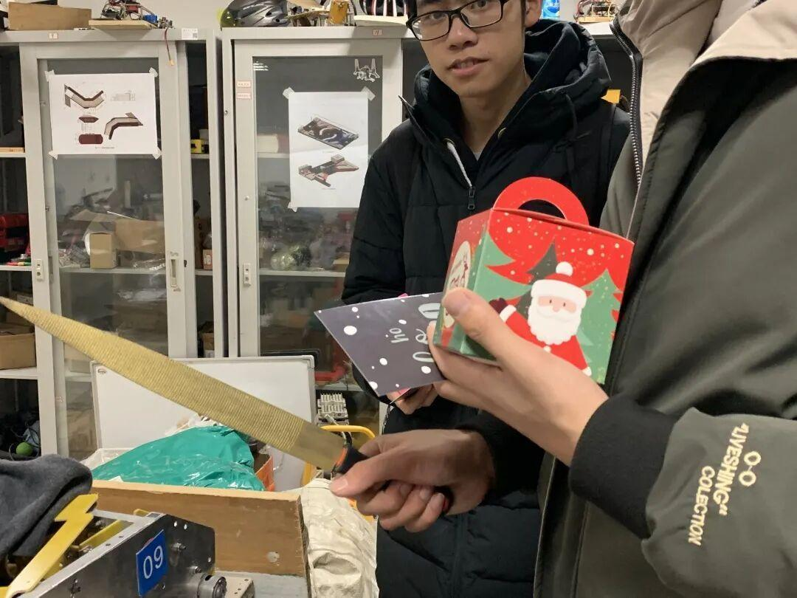
视觉组

1.编写视觉算法程序进行图像处理。
2.完成自瞄和能量机关的设计和雷达的开发。
3.辅助电控研发自动机器人。
硬件组
1.设计一些基本模块（例如：驱动模块），按照机械、电控需求设计模块。
2.检查机器人的各种线路问题，设计机器人整体布线布局安排，并且接各种各样的线。
3.设计超级电容。
注：因运营特殊性不参与本次招新
Ambition战队欢迎每一个怀揣梦想的队员
也不会辜负每一位队员的梦想
Ambition
如遇任何问题可加QQ群咨询
戳下方“阅读全文”了解招新要求并领取报名表
提取密码：1111
文字 | 杜遇涵
图片 | 运营组
排版 | 杜遇涵